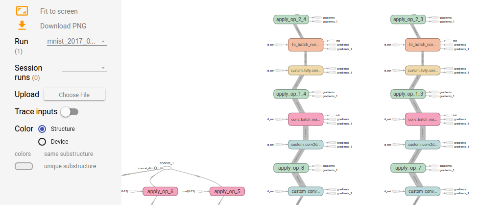

Tensorflow: A Practical Introduction
Alex Coventry
Created: 2017-01-12 Thu 08:55
What is Deep Learning?
- Automatically learning implicit representations from training data.
- Layering increasingly abstract representations on top of each other.
(http://www.iro.umontreal.ca/~bengioy/talks/DL-Tutorial-NIPS2015.pdf)
What is Tensorflow?
- A Python library for Machine Learning which emphasizes Deep Learning models.
- Example.
- A large suite of optimization algorithms and statistical tools.
- Environment-agnostic notation for large classes of ML-related calculations: Same program can run on a single CPU, a cluster, or a GPU, with minor adjustments.
- Tensor flow because many calculations are linear, so represented by tensors (multi-dimensional arrays of numbers.)
- Tensor/flow/ because information flows from one layer to the next (forwards and backwards) via the tensors.
The goal of this meetup
- Practical demonstrations of how to use Tensorflow for Deep Learning.
- Learn how to access the hardware and tools needed for serious experimentation elaborate neural nets.
- Learn to run the demonstrations yourself, and play with them to learn more.
- If you run into a problem, speak up!
- But time is short, so we may have to cut our losses and move on. Don't worry, the slides will be available, and you can work through them on your own later.

Getting Started With Tensorflow
Don't be intimidated! We'll take it step by step.
But to get serious work done, you need specialized hardware. We'll start by showing you how to access it.
This is a bit involved, but once you've figured it out you'll be able to work on neural nets independently!
Amazon offers a Deep Learning AMI which you can start with a single click. I have found it slow to start up, but it may simpler to use at first.
Install firessh
If you already have an ssh client and know how to use it with a keyfile, you don't need to do this.
- Start chrome browser.
- Search for "firessh chrome", and click on first link.
- Click "Add to Chrome"

Check whether you have the right AWS permissions
- On aws.amazon.com, click on "Sign In to the Console" in the top right-hand corner.
- From the console, click on EC2 in the top left-hand corner.
- Click on "Limits"
- Search forwards (Control-F/Command-F) for "g2.2xlarge").
- The value should be greater than 0.
- If not, you can request a limit increase.
- Other, more powerful instance types: g2.8xlarge, p2.* instances
Log into AWS and create a key
(If you already have a key, you don't need to do this.)
- Click on "Key Pairs", under "Network and Security" on the left-hand side.
- Click "Create Key Pair". Give it a name, click "Create".
- Key is downloaded to your local hard drive. Make sure you know where it is.
Create a Tensorflow machine from scratch – EC2 instance
- On aws.amazon.com, click on "Sign In to the Console" in the top right-hand corner.
- From the console, click on EC2 in the top left-hand corner.
- Click on "Launch Instance"
- Click on fourth "Select" button on right-hand side, for "Ubuntu Server"
- Type Control-F, then "GPU". Click on "g2.2xlarge" row.
- Click on "Configure Instance Details", then "Add storage". Change size from 8 to 16.
- Click on "Configure Security Group", then "Add Rule."
- Set port to 8888 and source to "Anywhere." (Opens the firewall on port 8888.) Open port 7777 in the same way.
- Click on "Review and Launch", then "Launch."
- Choose the key you created, check acknowledgement box, and launch
Make sure you know how to get rid of the machine
- From the Instances console, right click on the machine. Choose "Instance State". Choose "Stop" to shut the machine down. Choose "Terminate" to remove the machine altogether.
- While running, the machine costs 65c / hour.
- While it exists, its storage costs $1.60 / month.
Connect to the Tensorflow machine
- Click on the instance id ("i-<alphnumerics>"). In the bottom it will say something like "Public DNS: ec2-…compute-1.amazonaws.com". Take a copy of the "ec2-….amazonaws.com" address.
- In chrome, go to
chrome://appsand choose firessh. (Or use your own ssh client if you prefer.) - Enter anything you like for "Account Name", the DNS address for the "Host", "ubuntu" for the login, and use the "choose file" button to choose the local key file you created two slides ago.
- Click "Connect."
Starting a machine through coventry.systems
- Go to https://coventry.systems/.
- Enter the 12-digit token you bought, or pay by credit card ($6).
- Enter a password (all digits and numbers)
- Re-enter password, enter name & email.
- Hit submit
Machine State: Running Hostname: ec2-54-211-250-185.compute-1.amazonaws.com Username: ubuntu Password: The one you provided
Installation
Run these commands:
tmux git clone https://github.com/coventry/tfintro cd tfintro sudo bash bash ./install.sh
This will take a few minutes.
Start the Tensorflow container
% sudo bash ./run-tensorflow.sh root@d6ed7524ce0e:/#
From here, we have a working instance of tensorflow!
Let's start the ipython notebook.
(HIGHLY INSECURE!! DO NOT USE THIS FOR CONFIDENTIAL WORK)
# tmux # cd /tensorflow/tensorflow/tools/docker/notebooks/ # jupyter-notebook
Now browse to ec2-….amazonaws.com:8888, where ec2-… is the address of your machine.
These notebooks are a very useful introduction to tensorflow. Only the last one really needs a GPU.
InfoGAN
Back to the ssh terminal. Type "Control-B Control-B C" to open a new shell in the docker container. ("Control-B C" would open one on the host.)
Then type the following:
git clone https://github.com/coventry/InfoGAN cd InfoGAN PYTHONPATH=. python launchers/run_mnist_exp.py
Then "Control-B Control-B C" for yet another shell, and
tensorboard --port 7777 --logdir logs/mnist
Tensorboard
Tensorboard
Tensorboard

How InfoGAN works
(From buriburisuri/ac-gan)
Finer-grained architecture
Extra notes
Create AWS account
(No need to read this if you already have an account)
- Go to aws.amazon.com
- Click on "Create AWS account" in top right-hand corner
- Enter email address, click "I am a new user", click "Sign in"
- Fill out info, click "Create account"
- Fill out info. For "security check", don't include spaces. Click "Check here", click "Create Account"
- Fill out credit card info, click "Continue"
- After another "security check," give a telephone number.
- They'll call your number, enter the given code. Click "Continue"
- Click "Continue" again.
- Click "Sign in to the console."